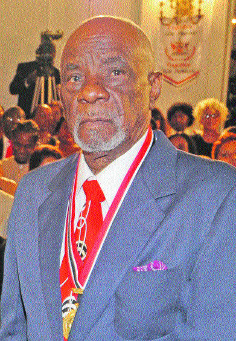

In 2024, the World Steelpan Thrust of Trinidad and Tobago and Highlanders Steel Orchestra collaborated in launching the inaugural Bertram "Bertie" Marshall O.R.T.T. National Steelpan Quiz and Spelling Bee Competition in commemoration of the United Nations designation of August 11th as World Steelpan Day.
The National Steelpan Quiz and Spelling Bee Competition aims to build awareness and knowledge of the national musical instrument’s history, its icons, its technological innovations and its contribution to world music. The event aims to ensure that the early and current contributors to the development of the steelpan movement and the instrument’s achievements and progress remain within the collective memory of Trinidadians and Tobagonians. This is especially important since many of the young people who comprise the majority of our pan players are not aware of its rich, dynamic history and evolution.
The Bertram "Bertie" Marshall Quiz and Spelling Bee is designed to keep the history and science of the steelpan alive for future generations. Participants are tested on their knowledge of steelpan pioneers, pan construction, musical literacy and spelling, and general steelpan history and culture.
Bertram "Bertie" Marshall, O.R.T.T. (1936–2012) was a master instrument-maker and a musical genius from Laventille, Trinidad and Tobago. He was Captain of Highlanders Steel Orchestra from 1959 to 1972.
He is credited with revolutionizing the steelpan by introducing harmonic tuning, amplification, and creating the "Bertphone" — a foot-pedal-controlled system used to manage the tone and amplification of steelpans. It allowed players to sustain notes in similar fashion to an organ, and included a damper pedal for controlling sound timbre.